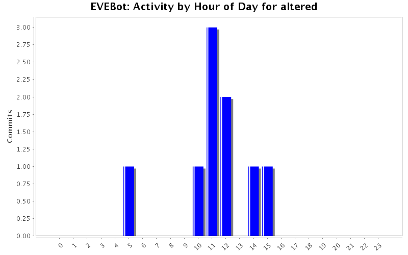
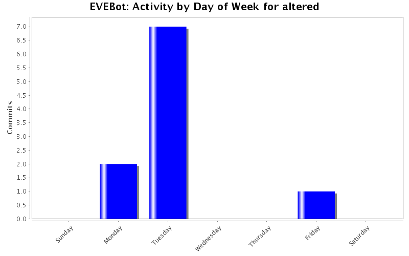
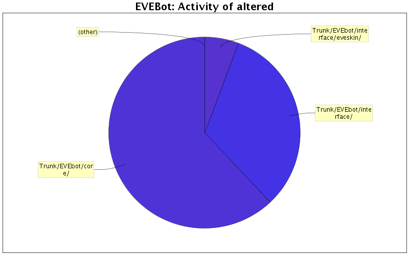

| Directory | Changes | Lines of Code | Lines per Change |
|---|---|---|---|
| Totals | 10 (100.0%) | 121 (100.0%) | 12.1 |
| Trunk/EVEbot/core/ | 2 (20.0%) | 75 (62.0%) | 37.5 |
| Trunk/EVEbot/interface/ | 3 (30.0%) | 39 (32.2%) | 13.0 |
| Trunk/EVEbot/interface/eveskin/ | 3 (30.0%) | 7 (5.8%) | 2.3 |
| devs/Altered/ | 1 (10.0%) | 0 (0.0%) | 0.0 |
| Trunk/EVEbot/interface/eveskin/MainGUI/ | 1 (10.0%) | 0 (0.0%) | 0.0 |

typo fixed
added starting of the bot when loaded after login
9 lines of code changed in 1 file:
obj_Login.iss added for autoconnect functionality.
- Not integrated yet.
66 lines of code changed in 1 file:
Play button converted to Run
1 lines of code changed in 2 files:
small fix to the about tab
12 lines of code changed in 1 file:
UI cleanup rearranging and console font fix
27 lines of code changed in 2 files:
Fixed Maximize button disappearing when minimizing.
1 lines of code changed in 1 file:
path fix for the templates
5 lines of code changed in 1 file:
ui rewamp
0 lines of code changed in 1 file: